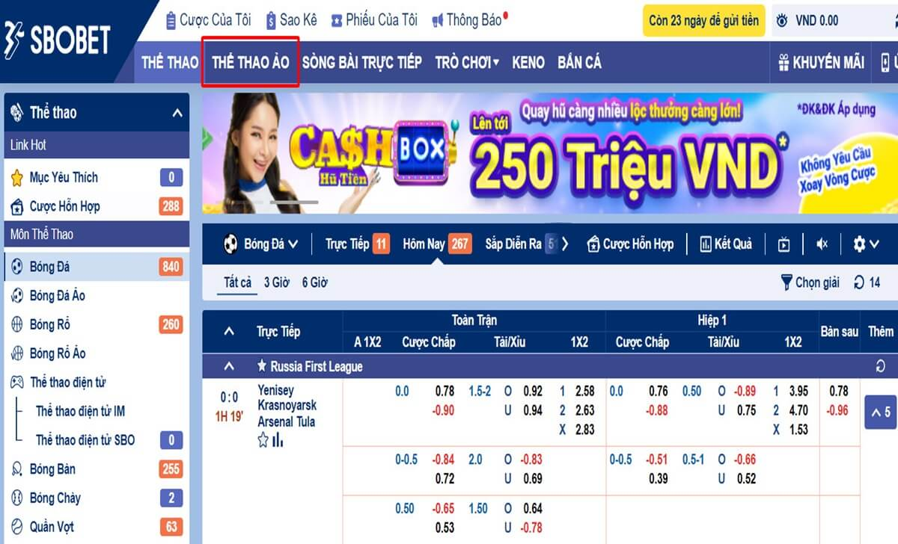

Home – Thể thao ao Sbotop – Bóng chuyền ảo là gì? Cách chơi bóng chuyền ảo Sbotop
BÓNG CHUYỀN ẢO LÀ GÌ? CÁCH CHƠI BÓNG CHUYỀN ẢO SBOTOP
Bóng chuyền ảo là một hình thức cá cược trực tuyến dựa trên các trận đấu bóng chuyền được mô phỏng bởi máy tính. Bạn có thể tham gia đặt cược vào các kết quả của các trận đấu bóng chuyền ảo một cách dễ dàng và có cơ hội thắng lớn. Ngay sau đây, chúng tôi sẽ hướng dẫn đến anh em cách chơi bóng chuyền ảo Sbotop hiệu quả nhất nhé!
Bóng chuyền ảo là gì?
Bóng chuyền ảo là gì?
Bóng chuyền ảo là một loại trò chơi cá cược trực tuyến, trong đó bạn có thể đặt cược vào các kết quả của các trận đấu bóng chuyền được tạo ra bởi hình thức online. Các trận đấu bóng chuyền ảo được phát sóng trên màn hình, với đồ họa và âm thanh chân thực. Bạn có thể xem các trận đấu bóng chuyền ảo trên các trang web cá cược uy tín, đặc biệt tại nhà cái Sbotop.
Các trận đấu bóng chuyền ảo được diễn ra liên tục, mỗi trận đấu kéo dài khoảng 3-4 phút. Bạn có thể chọn đặt cược vào các loại cược khác nhau, như tỷ số chung cuộc, tỷ số từng set, số điểm chênh lệch, số điểm lớn nhỏ, và cược phụ. Anh em cũng có thể xem các thống kê và lịch sử của các trận đấu bóng chuyền ảo để có thêm thông tin hỗ trợ cho quyết định của mình.
Ưu điểm khi chơi bóng chuyền ảo online
Ưu điểm khi chơi bóng chuyền ảo online
Chơi bóng chuyền ảo online có nhiều ưu điểm so với chơi bóng chuyền thực. Sau đây là một số ưu điểm của bóng chuyền ảo online mà chúng tôi đã tổng hợp như:
Cách chơi bóng chuyền ảo Sbotop chi tiết nhất
Cách chơi bóng chuyền ảo Sbotop chi tiết nhấtảo
Hiện nay, Sbotop là một trong những nhà cái hàng đầu tại Việt Nam, cung cấp cho bạn nhiều lựa chọn cá cược trực tuyến, trong đó có bóng chuyền ảo. Để chơi bóng chuyền ảo Sbotop, bạn cần thực hiện các bước sau:
Bước 1: Đăng ký đăng nhập tài khoản

Đăng ký đăng nhập tài khoản
Để chơi bóng chuyền ảo Sbotop, đầu tiên bạn cần có một tài khoản cá cược trên trang web của Sbotop.
Vậy nên anh em cần đăng ký SBOTOP miễn phí bằng cách điền vào mẫu đăng ký trên trang chủ của Sbotop, hoặc liên hệ với nhân viên hỗ trợ của Sbotop để được hướng dẫn. Sau khi đăng ký, bạn cần đăng nhập và nạp tiền SBOTOP để có thể đặt cược.
Bước 2: Chọn cổng game chơi bóng chuyền ảo
Chọn cổng game chơi bóng chuyền ảo
Sau khi đăng nhập SBOTOP, bạn sẽ thấy một giao diện chính với nhiều danh mục cá cược khác nhau. Bạn cần chọn danh mục Virtual Sports, sau đó chọn Volleyball để vào trang chơi bóng chuyền ảo. Bạn sẽ thấy một màn hình phát sóng các trận đấu bóng chuyền ảo, cùng với các loại cược và tỷ lệ cược tương ứng.
Bước 3: Tiến hành đặt cược
Để đặt cược vào một trận đấu bóng chuyền ảo, bạn cần chọn loại cược và đội bóng mà bạn muốn đặt cược, sau đó nhập số tiền mà bạn muốn đặt cược vào ô Stake. Bạn sẽ thấy số tiền thắng dự kiến của bạn ở ô Potential Win. Sau khi xác nhận, bạn cần nhấn vào nút Place Bet để hoàn tất việc đặt cược.
Bên cạnh đó, anh em có thể theo dõi trận đấu bóng chuyền ảo trên màn hình, và xem kết quả sau khi trận đấu kết thúc. Nếu bạn thắng, số tiền thắng của bạn sẽ được cộng vào tài khoản của bạn và ngược lại.
Đó là cách chơi bóng chuyền ảo Sbotop chi tiết nhất mà chúng tôi có thể hướng dẫn cho bạn. Hy vọng bài viết của tôi sẽ giúp bạn có được những trải nghiệm thú vị và lợi ích khi chơi bóng chuyền ảo online. Nếu có thắc mắc gì liên hệ CSKH SBOTOP để được hỗ trợ nhanh chóng nhé!